시작하기 전에
이 문서는 샘플 그림 빨간 비키니의 금발 여성 한 장으로 My Photo Work 의 기본 기능을 익히고, 이어서 실제 사진 보정을 처음부터 끝까지 따라 해 보는 연습 과정입니다.
- 1부 (1–7단계) 는 화면과 기본 조작입니다: 샘플 열기, 문서 탭, 확대와 스크롤, 도구와 옵션 줄, 작업 패널, 출력 패널, 실행 취소.
- 2부 (8–17단계) 는 같은 사진을 실제로 고칩니다: 레이어 복제, 자르기, 밝기, 비키니 색 바꾸기, 배경 흐림, 물건 지우기, 비네트, 제목 글자, 전후 비교, 내보내기.
- 실수해도 괜찮습니다. Ctrl+Z 로 되돌리고 Ctrl+Y 로 다시 실행합니다.
- 기능 하나하나의 자세한 설명은 도움말 → 사용자 설명서 에, 화면을 짚어 주는 안내는 도움말 → 튜토리얼 에 있습니다.
- 이 창의 위쪽에서 글꼴, 글자 크기, 언어를 바꾸고 인쇄 로 종이에 뽑을 수 있습니다.
1단계 — 시작 화면에서 샘플 열기
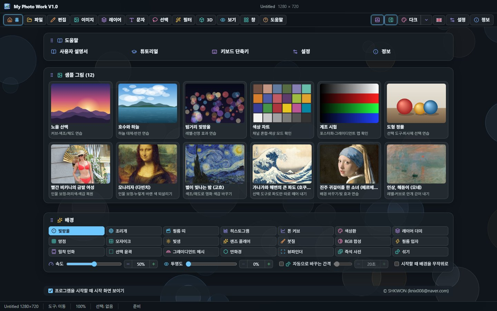
- 메뉴 막대 맨 왼쪽의 홈 단추를 누르면 시작 화면이 나옵니다.
- 샘플 그림 카드에서 빨간 비키니의 금발 여성 을 누릅니다.
- 사진이 새 문서로 열리고 시작 화면이 닫힙니다.
처음 실행하면 필요한 모델 준비 창이 뜰 수 있습니다. 나중에 를 눌러도 이 튜토리얼은 모두 따라 할 수 있습니다.
2단계 — 편집 화면과 문서 탭
- 캔버스 위에 문서 탭 이 생겼습니다. 파일을 더 열면 탭이 늘어나고, 탭을 눌러 오갑니다. 탭이 많으면 오른쪽 끝의 < > 로 넘깁니다.
- 사진이 없는 부분은 흰색과 회색 체크무늬 로 보입니다. 투명하다는 뜻입니다.
- 왼쪽은 도구 막대, 오른쪽은 작업 패널, 아래는 출력 패널입니다.
3단계 — 확대·축소와 스크롤
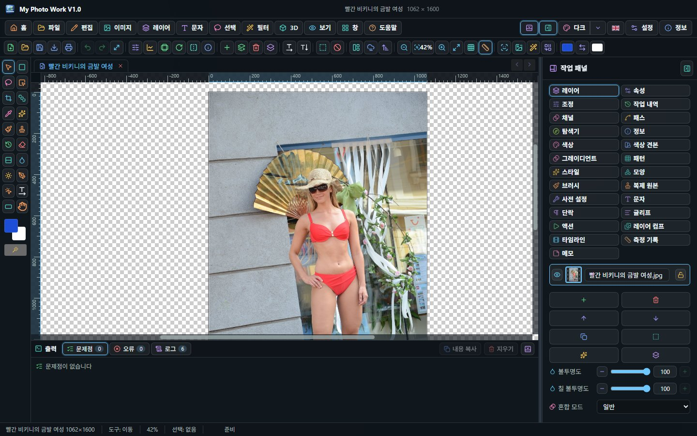
- 보기 → 확대(Ctrl++)를 두 번 눌러 사진을 크게 봅니다. 툴바의 숫자가 확대 비율입니다.
- 캔버스 아래와 오른쪽의 스크롤 막대 를 끌어 사진의 다른 부분으로 옮깁니다. 스페이스바를 누른 채 끌어도 됩니다.
- 보기 → 화면에 맞춤(Ctrl+0)으로 사진 전체가 보이게 되돌립니다.
4단계 — 도구와 옵션 줄
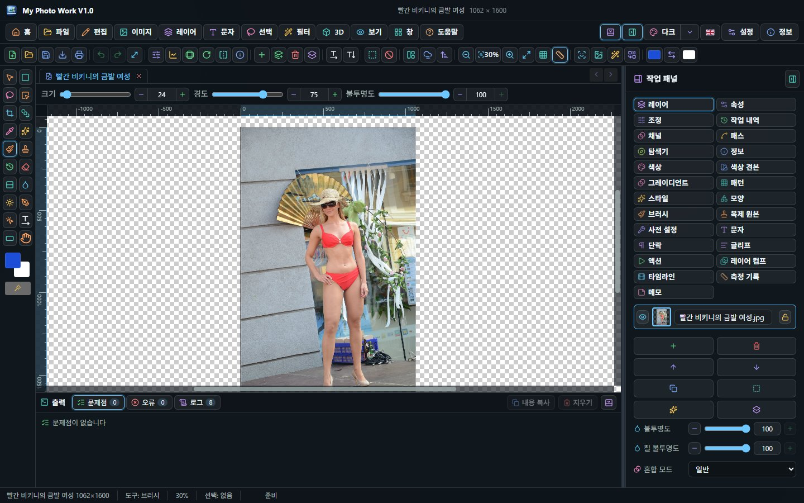
- 도구 막대에서 브러시(B)를 고릅니다.
- 문서 탭 아래에 옵션 줄 이 나타나 크기, 경도, 불투명도를 바꿀 수 있습니다. 슬라이더 옆의 − + 로 한 단계씩 바꿉니다.
- 다시 이동(V)을 고르면 설정할 것이 없어 옵션 줄이 사라집니다. 고른 도구의 설명은 출력 → 로그 에 남습니다.
5단계 — 작업 패널과 레이어
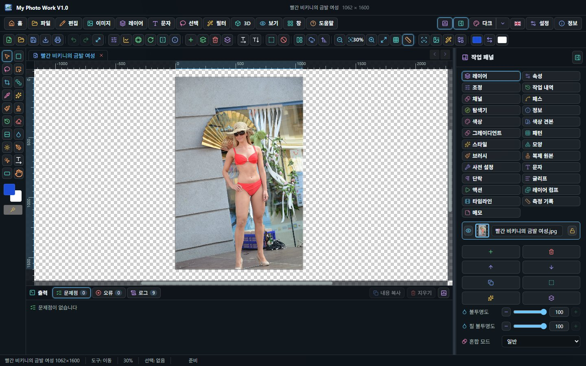
- 오른쪽 작업 패널 에서 레이어 탭을 고릅니다. 지금은 사진 레이어 하나뿐입니다.
- 레이어의 눈 단추로 숨기고 보이게 하며, 아래의 불투명도 로 투명도를 바꿉니다.
- 제목 막대 오른쪽 단추로 패널을 접고 펼 수 있습니다. 접어도 제목은 세로로 보입니다.
6단계 — 출력 패널: 문제점·오류·로그
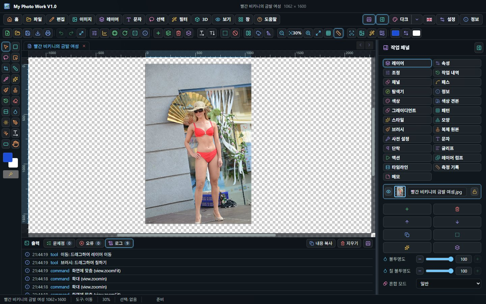
- 캔버스 아래 출력 패널의 로그 탭에는 실행한 명령, 연 파일, 고른 도구가 시간 순서로 남습니다.
- 문제점 탭은 저장하지 않은 변경이나 숨겨진 레이어처럼 지금 알아 둘 것을, 오류 탭은 실패한 작업을 보여 줍니다.
- 각 탭에는 내용 복사 와 지우기 단추가 있습니다. 오른쪽 끝 단추로 패널을 접습니다.
7단계 — 실행 취소와 작업 내역
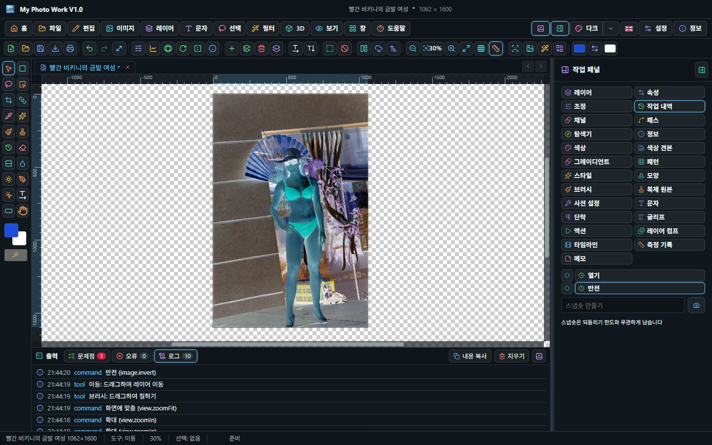
- 연습 삼아 이미지 → 반전 을 누르면 색이 뒤집힙니다.
- 작업 패널의 작업 내역 탭에 반전 이 한 줄 생깁니다. 위 줄을 누르면 그 시점으로 돌아갑니다.
- 편집 → 실행 취소(Ctrl+Z)로 원래대로 돌립니다. 이제 2부에서 이 사진을 실제로 고칩니다.
8단계 — 원본 레이어 복제
- 레이어 → 레이어 복제 를 누릅니다. 레이어 패널에 같은 사진이 하나 더 생기고 위쪽 복사본이 선택됩니다.
- 앞으로의 보정은 이 복사본에 합니다. 아래의 원본은 그대로 남아 16단계에서 전후 비교에 씁니다.
9단계 — 세로 구도로 자르기
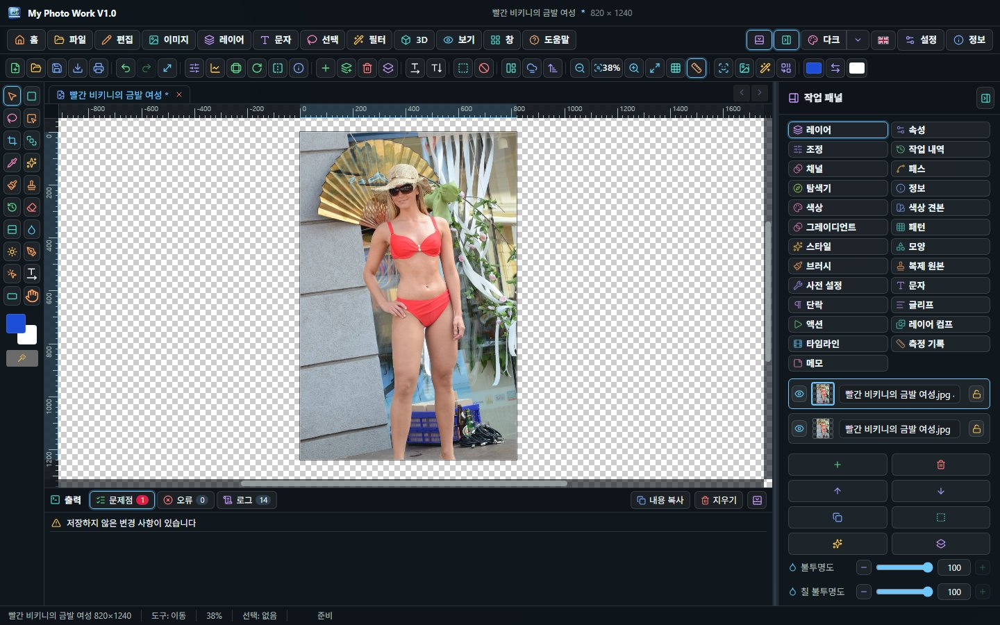
- 도구 막대에서 사각형 선택(M)을 고르고, 위쪽 벽과 아래쪽 바닥을 조금 덜어 내도록 모델을 중심으로 세로로 긴 사각형을 끕니다.
- 이미지 → 선택 영역으로 자르기 를 누릅니다. 캔버스가 선택한 크기로 줄어듭니다.
- 보기 → 화면에 맞춤 으로 다시 전체를 봅니다.
10단계 — 밝기와 대비 맞추기
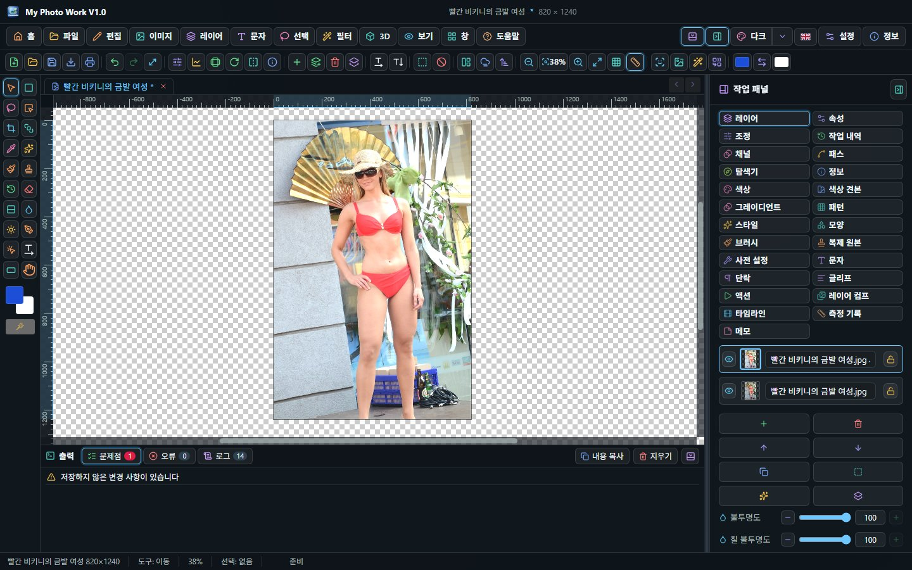
- 이미지 → 밝기/대비 를 엽니다.
- 밝기 를 12 정도, 대비 를 18 정도로 올립니다. 미리 보기로 바로 확인됩니다.
- 적용 을 누릅니다. 사진이 조금 더 또렷해집니다.
11단계 — 비키니 색을 파랑으로 바꾸기
- 도구 막대의 스포이드(I)로 비키니의 빨간 부분을 누릅니다. 그 색이 전경색 이 됩니다.
- 선택 → 색상 범위 를 열고 허용치 를 40 정도로 둔 채 적용합니다. 비키니의 빨간 부분만 선택됩니다. 허용치가 너무 크면 피부의 붉은 그늘까지 선택되니 조금씩 올리세요.
- 이미지 → 색조/채도 에서 색조 를 −135 정도로 옮기고 적용 합니다. 주름과 그늘은 그대로 둔 채 색만 파랗게 바뀝니다.
- 접힌 곳에 빨간색이 남았으면 스포이드로 남은 빨강을 다시 찍고 2–3을 한 번 더 합니다.
- 선택 → 선택 해제(Ctrl+D)로 선택을 지웁니다.
12단계 — 배경 흐리게 하기
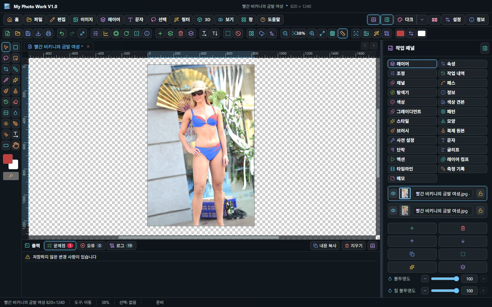
- 선택 → 피사체 선택 을 누릅니다. 모델이 자동으로 선택됩니다.
- 선택 → 선택 반전(Ctrl+Shift+I)으로 배경만 선택합니다.
- 필터 → 흐림 효과 → 가우시안 흐림 에서 반경 을 7 정도로 두고 적용 합니다. 벽과 부채가 흐려져 모델이 앞으로 나와 보입니다.
- 선택 → 선택 해제 로 마칩니다.
13단계 — 바닥의 전선 지우기
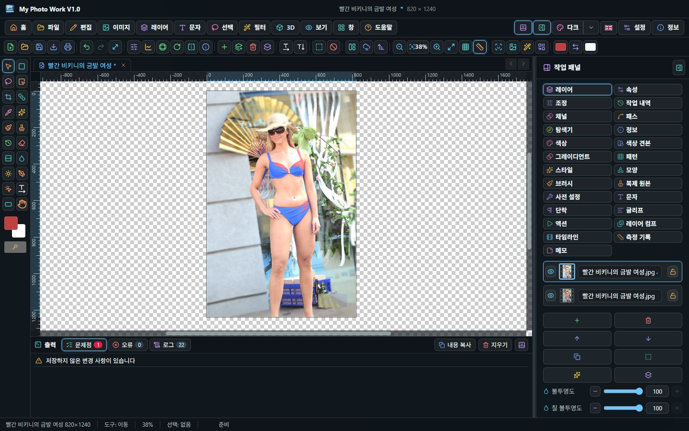
- 오른쪽 아래 바닥의 검은 전선 뭉치를 사각형 선택 으로 감쌉니다.
- 도구 막대의 복구 그룹(J)에서 제거 도구를 고르고 선택 영역 안을 한 번 누릅니다. 주변 바닥으로 채워집니다.
- 작은 티는 스팟 복원 도구로 그 위를 칠해 지웁니다.
- 선택 해제 후 이동 도구로 돌아갑니다.
14단계 — 비네트로 가장자리 어둡게
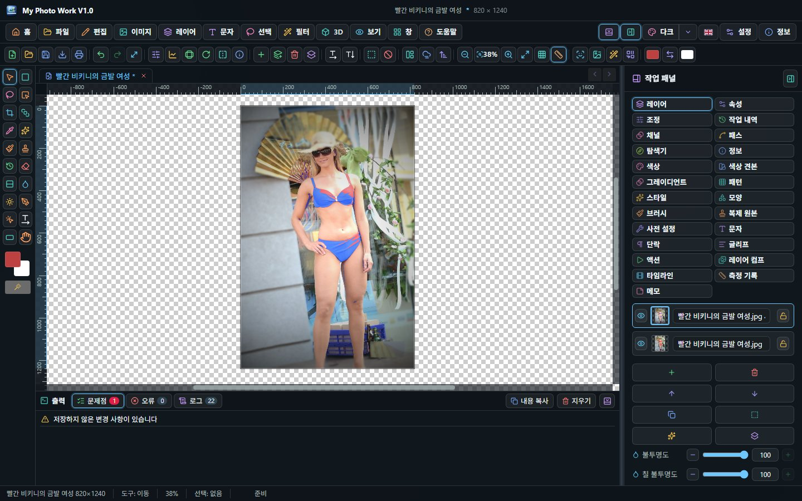
- 필터 → 렌즈 교정 을 엽니다.
- 비네트 를 −70 정도로 내리고 적용 합니다. 가장자리가 어두워져 시선이 가운데로 모입니다.
15단계 — 제목 글자 넣기
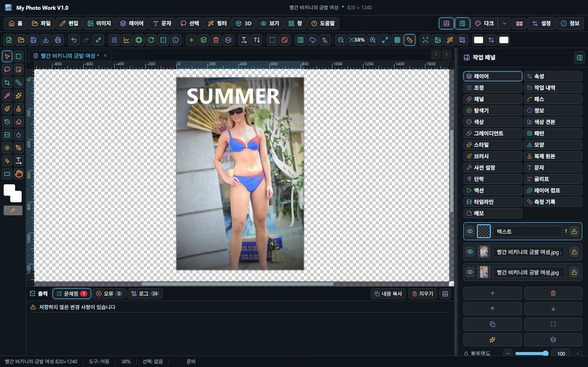
- 툴바의 전경색을 흰색으로 바꿉니다.
- 도구 막대에서 가로 문자(T)를 고르고 사진 왼쪽 위를 누릅니다.
- 글자 창에
SUMMER를 쓰고 크기를 크게, 굵게를 켠 뒤 적용 합니다. 레이어 패널에 문자 레이어가 생깁니다. - 문자 레이어는 나중에 두 번 눌러 다시 고칠 수 있습니다.
16단계 — 전후 비교
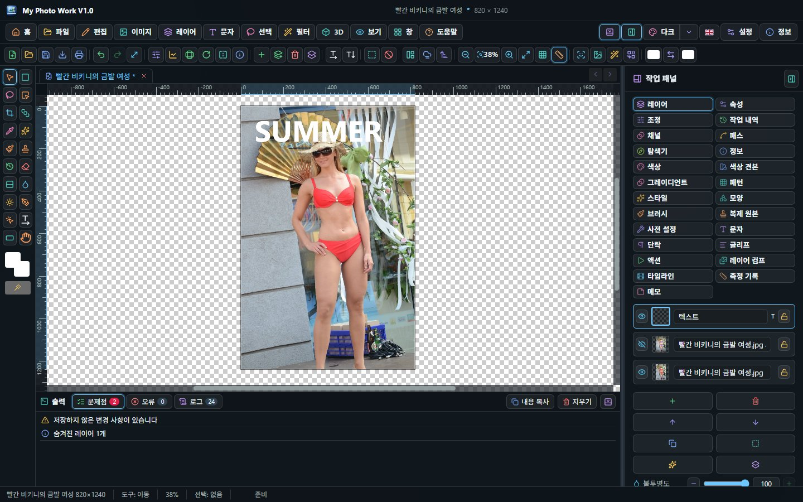
- 레이어 패널에서 보정한 복사본의 눈 단추를 눌러 숨깁니다. 아래의 원본이 보여 처음 사진과 비교할 수 있습니다. 문제점 탭에 숨겨진 레이어 1개 가 나타납니다.
- 다시 눌러 보이게 합니다.
17단계 — JPEG·PNG로 내보내기
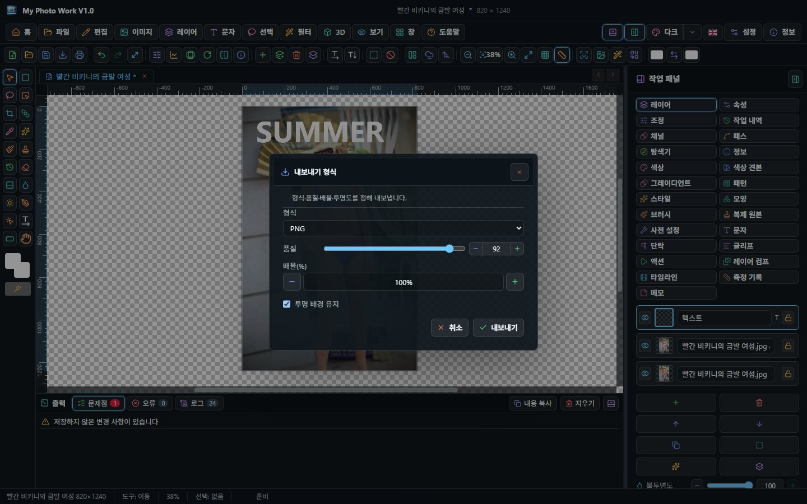
- 파일 → 내보내기 형식 을 엽니다.
- 형식 에서 JPEG 나 PNG 를 고르고, 품질 과 배율 을 정합니다. PNG 는 투명 배경 유지 를 쓸 수 있습니다.
- 내보내기 를 누르고 저장할 곳을 고릅니다.
- 레이어를 그대로 두고 나중에 다시 고치려면 파일 → 저장(Ctrl+S)으로 프로젝트 파일도 저장해 두세요.
다음 단계
- 같은 방법으로 다른 샘플(명화, 해변, 색상 차트)도 고쳐 보세요.
- 메뉴의 모든 명령과 단축키는 도움말 → 사용자 설명서(F1)에 정리되어 있습니다.